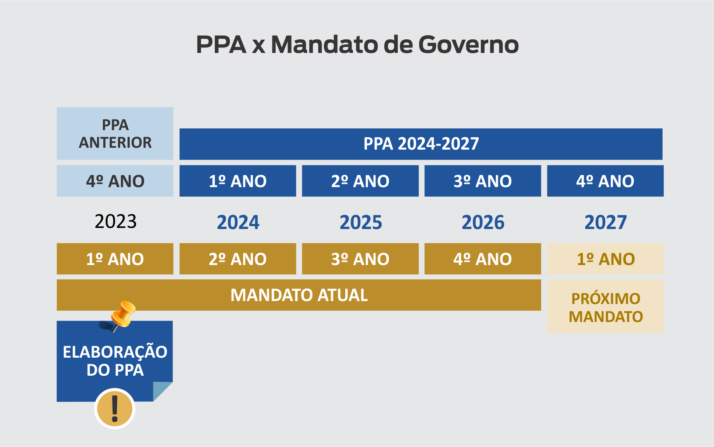
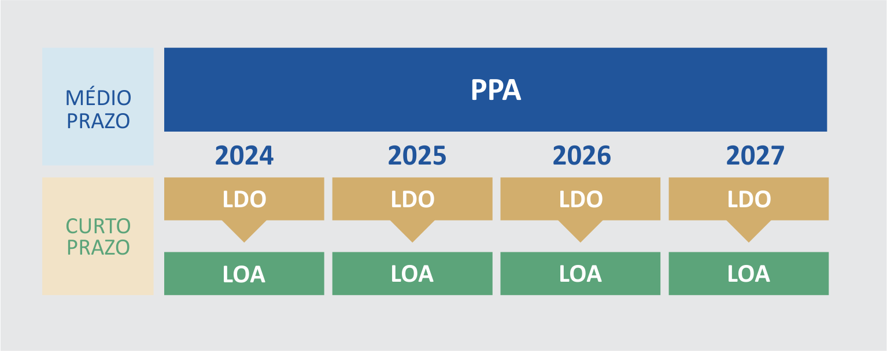
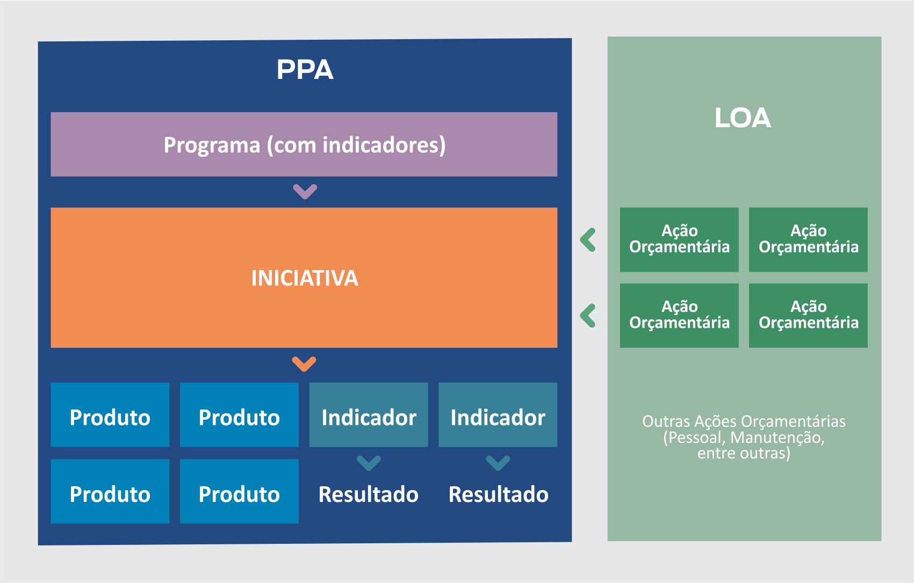

O Plano Plurianual (PPA) é o documento onde um governo declara o que pretende realizar e indica os meios para a
implementação das políticas públicas. É o plano que faz a ponte entre as diretrizes estratégicas governamentais -
mais amplas - e as entregas concretas para a sociedade, definindo os caminhos exequíveis - “como fazer” - para se
chegar aos resultados pretendidos.
É elaborado no primeiro ano de mandato de um novo governo, enquanto vigora o último ano de PPA do governo
anterior. Depois de pronto, ele é enviado para a Assembleia Legislativa na forma de um Projeto de Lei, recebe
emendas parlamentares e é sancionado no fim do ano para entrar em vigor no início do segundo ano de mandato do
governante.

O PPA orienta dois outros importantes instrumentos de planejamento público: a Lei de Diretrizes Orçamentárias (LDO) e a Lei Orçamentária Anual (LOA). Enquanto o PPA traduz diretrizes de governo em um planejamento estruturado para quatro anos, a LDO sinaliza quais são as prioridades de governo a cada ano e a LOA define como será distribuído o orçamento anual.

No Estado do Rio de Janeiro, as
iniciativas são o elemento central do planejamento. Articuladas com outras iniciativas dentro do mesmo escopo temático, formam os programas, que são prioritariamente multissetoriais. As iniciativas, financiadas por ações orçamentárias, detalham quais bens e serviços (produtos) devem ser entregues para a população, em quais regiões do Estado e em qual quantidade, para que seus objetivos sejam alcançados. Acesse
aqui a programação do PPA.

Nos
Guias e Manuais do PPA encontram-se informações mais detalhadas sobre o documento, assim como a estrutura do PPA do estado do Rio de janeiro e sua metodologia de elaboração.